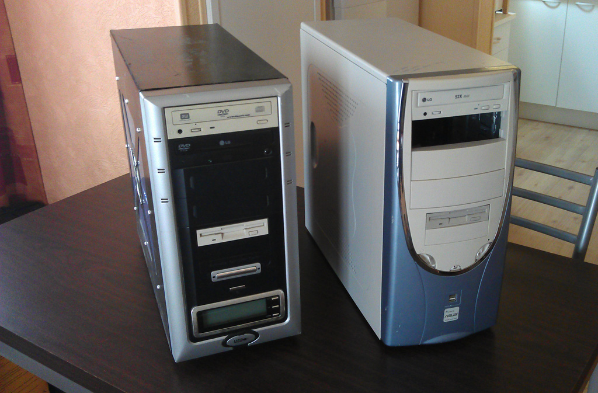

Hardware&Co |
 |
| Introduction aux composants de base d'un ordinateur |
En apprendre plus sur le hardware |
Découvrir l'auteur | Demande de renseignements | Mentions légales |
Hardware&Co |
|
| Introduction aux composants de base d'un ordinateur |
En apprendre plus sur le hardware |
Découvrir l'auteur | Demande de renseignements | Mentions légales |

Tant de questions sans réponses... Pour l'instant!
Vous vous en doutiez sûrement, une technologie se cache derrière votre écran, votre ordinateur. Pour qu'une image puisse s'afficher à votre écran, une multitude de calculs sont nécéssaires à effectuer par des composants, se trouvant dans votre boîtier ou votre portable.
Ces composants veillent au bon fonctionnement de votre ordinateur! Vous en retirez un, votre ordinateur ne démarre plus!
Ou alors parfois, vous rencontrerez des ordinateurs très très lent! Probablement car l'un des composant de celui-ci se fait vieux, ou est moins rapide.
Voyez cela comme un restaurant, dirigé par un patron fainéant.
Imaginons qu'un employé, ayant une fonction capitale au bon fonctionnement du restaurant, décide de faire la grève.
Le restaurant ne pourra pas servir les commandes car il manque cet élément primordial!
C'est exactement pareil pour un ordinateur. Si il lui manque un composant : misère! Il ne sait pas comment afficher d'image à l'écran.
De même, imaginez que tous les employés se font vieux..
Lorsque l'on leur demandera d'effectuer de longues commandes ou des plats sophistiqués : l'attente sera longue.
Ou alors si tous les employés sont jeunes et pleins d'énergie, mais que l'employé passant les commandes ou faisant la cuisine est lent : tout le service sera ralenti!
C'est le même schéma pour un ordinateur. Un ou des composants vieux ralentiront ou limiteront la puissance de celui-ci.
Avant de commencer, révisons un peu le lexique:
- Hardware : mot anglais pour "matériel". Il désigne l'ensemble des éléments physiques constituant un PC. (retenez-le, il est important)
- Composants : un composant est un élément du PC. (ex: processeur, carte-graphique, carte-mère, boîtier etc..)
- Chipset : groupe de puces intégrées à la carte-mère pour contrôler le flux de données et la communication entre les différents composants, tel que le processeur et la mémoire. On y dépose notre processeur.
- CPU : Central Processing Unit, soit le "processeur" en français.
- GPU : Graphical Processing Unit, soit la "carte graphique" en français.
- RAM : Random Access Memory, soit la "mémoire vive" en français.
- HDD : Hard Disk Drive, soit le "disque dur" en français.
- SDD : Solid State Drive, un "disque dur" dépourvu de partie mécanique.
- Mobo / CM : Ces deux termes sont des diminutifs de la "carte-mère". Mobo pour motherboard, et CM pour carte-mère.
- Geek : Individu étrange sans aucunes relations sociales, passant ses journées assis devant un ordinateur à manger des chips.
Bien! Je pense que vous êtes maintenant prêt à plonger dans le grand bain, rendez-vous à la rubrique en apprendre plus sur le hardware et bonne lecture!
Si vous souhaites développer un lexique plus poussé sur l'informatique, je vous recommande d'aller visiter
ce site.